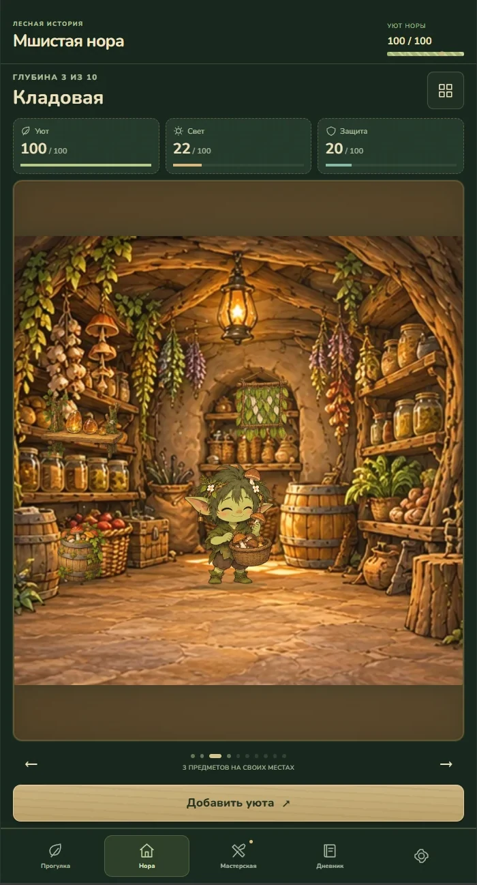

Главный проект / Mobile game
Мшистая нора
Маленький лесной мир, в который хочется возвращаться. Мобильный кликер, где прогресс ощущается через уют собственного дома.
- Моя роль
- Game UI/UX · Art direction
- В фокусе
- Игровой цикл, маскот, система экранов

Нора: дом как видимый результат прогресса.